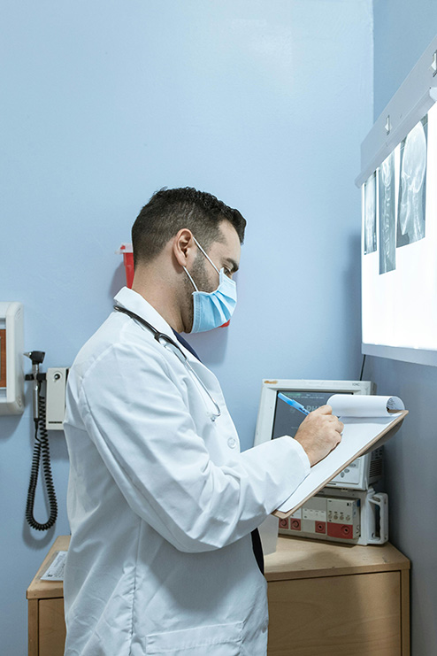
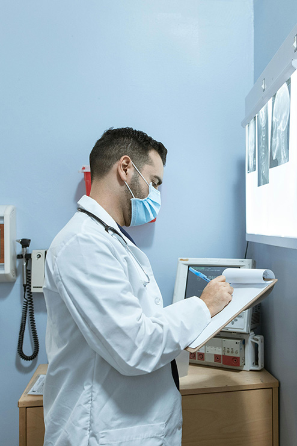

NDA Med. Sağlık Hizmetleri olarak yurtiçi ve yurtdışından estetik veya rekonstrüktif operasyon için gelen
tüm misafirlerimize eşsiz bir deneyim sunuyoruz. Plastik, estetik ve rekonstrüktif cerrahi, saç ekimi,
diş estetiği, göz çizdirme ameliyatı ve daha birçok sağlık ve estetik hizmeti veriyoruz. Türkiye’nin
başkenti ve bir kültür abidesi olan Ankara’mızda sizlere ulaşım hizmeti ve konaklama fırsatı sunuyor,
ülkemizde bulunduğunuz süre zarfında size kendinizi evinizde hissettirecek rahatlığı sağlıyoruz.
Yurtdışından gelen misafirlerimizin ülkemize geldiklerinde yabancı kalmamaları için onları Ankara’ya
ulaştıktan sonra özel araçla otellerine ulaştırıyor, yapılacak estetik veya sağlık işlemi için kliniğe
ulaştırıyor ve işlem bitip yapılan kontrollerden sonra tekrar otellerine ulaştırıyoruz. Ülkenizden
uzakta olduğunuzun farkında olup sizi şehrin en iyi otellerine yönlendiriyoruz. Son olarak ülkemizden
ayrılmak üzere tekrar havaalanına profesyonel ulaştırma sağlıyoruz.
Vaktinizin değerli olduğunu bildiğimiz için koordine şekilde, size danışarak programınıza uygun şekilde
bir plan yapıp plana sadık kalıyoruz. Böylece vakit kaybetmeksizin ihtiyacınız olan hizmeti size ayrılan
süre içinde sunuyor ve tüm gereken işleri en verimli şekilde yerine getiriyoruz.
Özellikle operasyon ve sonraki süreç hakkında birçok soru işareti olan misafirlerimize aşağıdaki
garantileri sunmayı kendimize bir görev bildik:
 

Tedavi Yöntemlerimizle İlgili Sorularınız İçin Yanınızdayız.


Ülkemiz dünyanın merkezinde bulunuyor diyebiliriz ve birçok farklı açıdan ilgi odağı olup her yıl
milyonlarca turist ağırlıyor. Başkent Ankara ise Türkiye’nin merkezinde bulunuyor ve böylece her
kesime hitap eden turistik tesisleriyle Ankara’da ziyaret edilebilecek şeyler listesinde başta
Anıtkabir, Ankara Kalesi, Eski Meclis, Kocatepe Camii ve birçok müze geliyor. Bunların dışında
doğasıyla da ünlü başkentimizde Eymir Gölü ve Kızılcahamam ormanları gibi farklı doğa harikasını
içinde barındırıyor. Merkezi konumu sayesinde Ankara’ya yakın olan birçok turistik yer mevcut.
Kapadokya’da Peribacaları ve balon turu veya Ilgaz dağında kayak keyfi yapmak isteyenlere Ankara’dan
sadece iki saatte ulaşım sağlanabiliyor.
Alışveriş severler içinse Ankara adeta bir cennet. Kentte
toplamda 32 adet AVM bulunuyor ve size eşsiz bir alışveriş deneyimi sunmak için sizleri bekliyor. En
iyi AVM’ler için bize ulaştığınız formu doldururken tavsiyelerimizi talep etmeyi unutmayın!
Yukarıdaki sebepler Ankara’ya gelmeniz için sadece birkaçı. Söz konusu sağlık olunca Ankara’da
hizmet alabilecek hekim ve sağlık uzmanı sayısı son derece yüksek. Ayrıca her yıl Türkiye’nin en
değerli üniversitelerinden mezun olup başkentimizde cerrah olarak hizmet veren birçok hekim
bulunuyor. Ülkemizi yurtdışında da temsil eden ve eğitim veren hekimlerimizden hizmet alabilmek için
bize ulaşın.
Sakinliğiyle bilinen, kara ve havayoluyla kolay ulaşılabilir ve dünyada az bilinen başkentler
listesinde üçüncü sırada yer alan Ankara’da sağlık hizmeti almak için sizi de bekliyoruz! 10 Not So
Popular Capital Cities | Touristically (thetouristically.com)